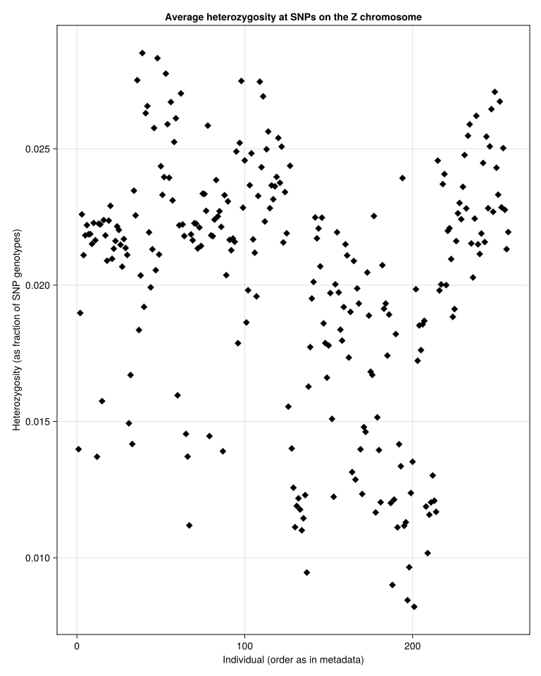
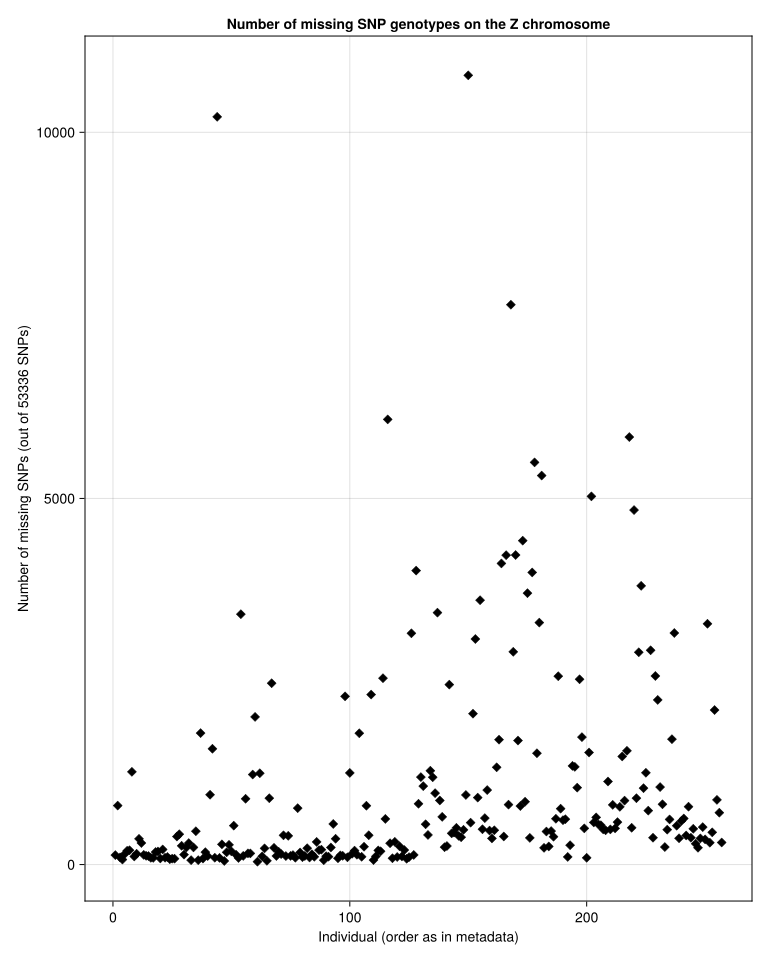
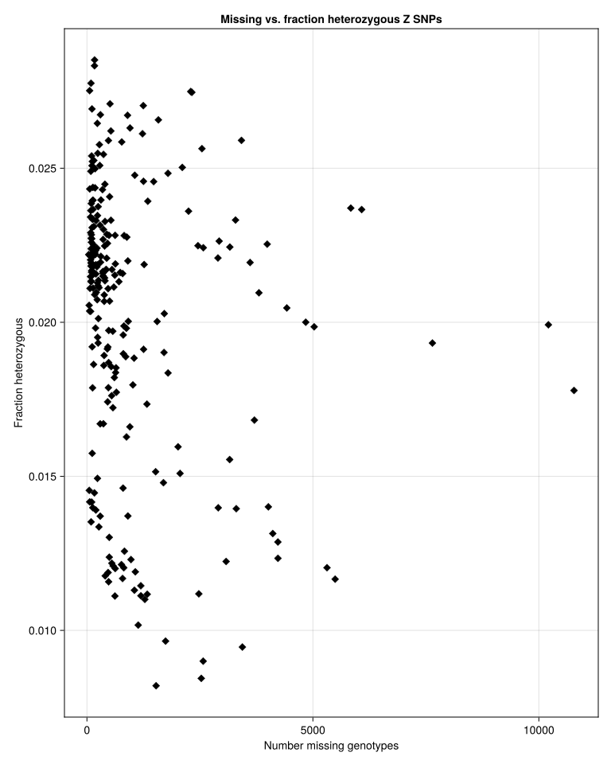
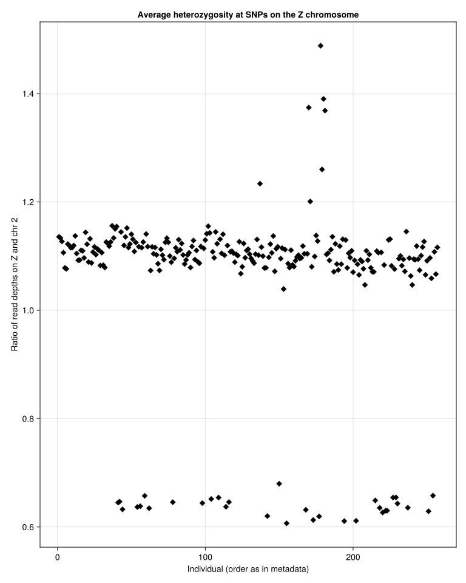
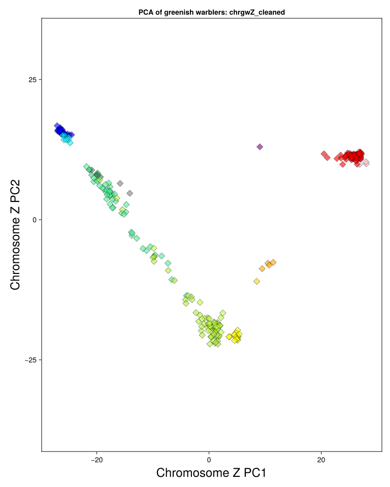
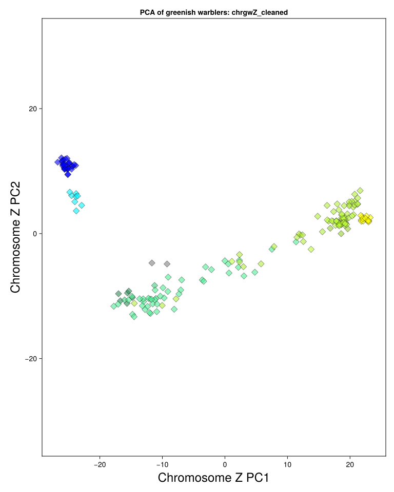
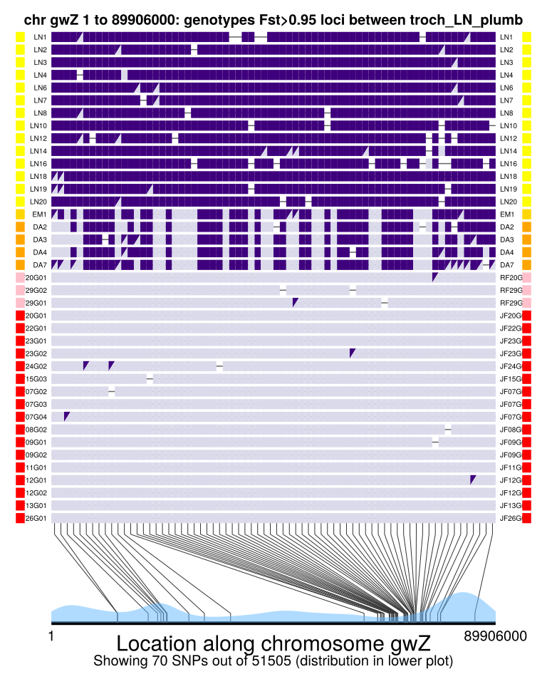
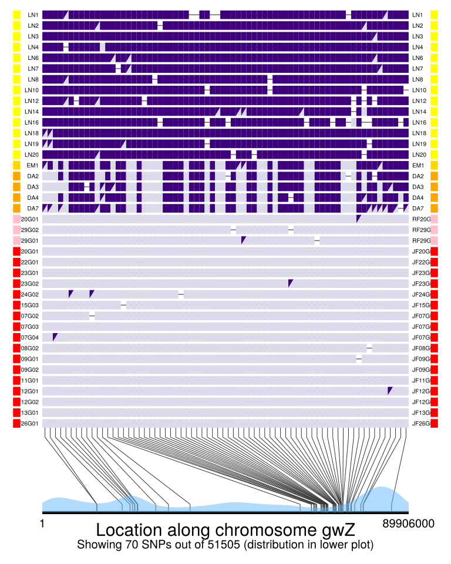
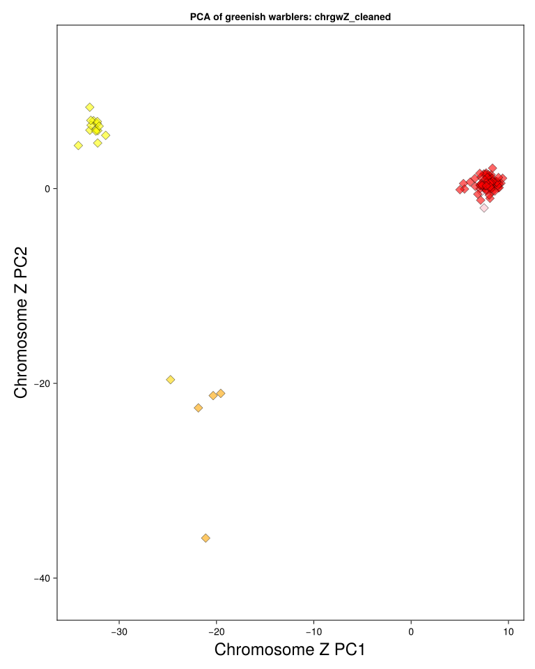

using JLD2 # for loading saved data
using DataFrames # for storing data as type DataFrame
using CairoMakie # for plots
using CSV # for reading in delimited files
using Impute # for imputing missing genotypes
using Statistics # for var() function
using MultivariateStats # for getting variances from PCA modelGreenish Warbler Z-chromosome analysis
This page shows the code used for filtering of SNPs that mapped to the Z chromosome.
Prior to examining the code on this page, readers should look at GreenishWarblerGenomics2025.qmd (or .html), as this current page depends on the code on that page being run first.
Citation
The scripts, data, and figures shown in this website were used as the basis for the paper listed below, which should be cited as the source of information from this website:
Irwin, D., S. Bensch, C. Charlebois, G. David, A. Geraldes, S.K. Gupta, B. Harr, P. Holt, J.H. Irwin, V.V. Ivanitskii, I.M. Marova, Y. Niu, S. Seneviratne, A. Singh, Y. Wu, S. Zhang, T.D. Price. 2025. The distribution and dispersal of large haploblocks in a superspecies. Molecular Ecology, in press.
A note about plots in this document
The plots shown below may different somewhat in appearance between the version produced by Quarto (i.e., in this published document) and the version you would get if you run this code without using Quarto. In particular, the dimensions and font sizes of labels and titles may differ. So if you want the versions identical to those used in the paper, run the code directly in the Julia REPL (or using an environment such as VS Code) without using Quarto.
In the rendered (.html) version of this Quarto notebook, each figure may be accompanied by a warning caused by an interaction between Quarto and the Makie plotting package. Ignore these warnings as they do not affect the calculations or plots.
Load packages
Load my custom package GenomicDiversity:
using GenomicDiversityChoose working directory
You would need to alter this to the appropriate directory on your computer.
dataDirectory = "/Users/darrenirwin/Dropbox/Darren's current work/"
cd(dataDirectory)Load the filtered dataset
This dataset was produced through filtering in GreenishWarblerGenomics2025.qmd
baseName = "GW_genomics_2022_with_new_genome/GW2022_GBS_012NA_files/GW2022_all4plates.genotypes.SNPs_only.whole_genome"
tagName = ".Jan2025."
filename = string(baseName, tagName, "ind_SNP_ind_filtered.jld2")
# load info into a dictionary:
d = load(filename)
if baseName != d["baseName"]
println("WARNING: baseNames don't match between that defined above and in the saved file")
end
if tagName != d["tagName"]
println("WARNING: tagNames don't match don't match between that defined above and in the saved file")
end
GW_GenoData_indFiltered = d["GW_GenoData_indFiltered"]
repoDirectory = d["repoDirectory"]
dataDirectory = d["dataDirectory"]
scaffold_info = d["scaffold_info"]
scaffold_lengths = d["scaffold_lengths"]
filenameTextMiddle = d["filenameTextMiddle"]
missingGenotypeThreshold = d["missingGenotypeThreshold"]
filenameTextEnd = d["filenameTextEnd"]
chromosomes_to_process =d["chromosomes_to_process"]
println("Loaded the filtered data.")Loaded the filtered data.Also define correctNames() function as in main script, to correct some names:
function correctNames(metadataColumn)
metadataColumn_corrected = replace(metadataColumn, "GW_Armando_plate1_TTGW05_rep2" => "GW_Armando_plate1_TTGW05r2",
"GW_Lane5_NA3-3ul" => "GW_Lane5_NA3",
"GW_Armando_plate1_TTGW_15_05" => "GW_Armando_plate1_TTGW-15-05",
"GW_Armando_plate1_TTGW_15_07" => "GW_Armando_plate1_TTGW-15-07",
"GW_Armando_plate1_TTGW_15_08" => "GW_Armando_plate1_TTGW-15-08",
"GW_Armando_plate1_TTGW_15_09" => "GW_Armando_plate1_TTGW-15-09",
"GW_Armando_plate1_TTGW_15_01" => "GW_Armando_plate1_TTGW-15-01",
"GW_Armando_plate1_TTGW_15_02" => "GW_Armando_plate1_TTGW-15-02",
"GW_Armando_plate1_TTGW_15_03" => "GW_Armando_plate1_TTGW-15-03",
"GW_Armando_plate1_TTGW_15_04" => "GW_Armando_plate1_TTGW-15-04",
"GW_Armando_plate1_TTGW_15_06" => "GW_Armando_plate1_TTGW-15-06",
"GW_Armando_plate1_TTGW_15_10" => "GW_Armando_plate1_TTGW-15-10",
"GW_Armando_plate2_TTGW_15_01" => "GW_Armando_plate2_TTGW-15-01",
"GW_Armando_plate2_TTGW_15_02" => "GW_Armando_plate2_TTGW-15-02",
"GW_Armando_plate2_TTGW_15_03" => "GW_Armando_plate2_TTGW-15-03",
"GW_Armando_plate2_TTGW_15_04" => "GW_Armando_plate2_TTGW-15-04",
"GW_Armando_plate2_TTGW_15_06" => "GW_Armando_plate2_TTGW-15-06",
"GW_Armando_plate2_TTGW_15_10" => "GW_Armando_plate2_TTGW-15-10")
endcorrectNames (generic function with 1 method)Z chromosome differentiation
The initial PCA of Z chromosome variation showed some unexpected structure, with females having shifted locations (especially on PC2) compared to males. This is likely due to females having W chromosomes, reads from which are sometimes incorrectly mapped to the Z. Hence a small fraction of SNPs differ between females and males (with females called as heterozygotes, males as homozygotes, at those SNPs). However, at loci that are only on the Z, males can be heterozygous (2 alleles) whereas females can only be hemizygous (one allele).
To remove this problem, we could take several approaches (e.g., remove problematic SNPs, or look at one sex at a time). Here we’ll plot only males as that will remove the W chromosome. To infer sex of the birds, we’ll try plotting heterozygosity of Z chromosome SNPs per bird.
chrom = "gwZ"
regionText = string("chr", chrom)
lociSelection = (GW_GenoData_indFiltered.positions.chrom .== chrom)
GW_GenoData_indFiltered_Zonly = GenomicDiversity.filterLoci(GW_GenoData_indFiltered, lociSelection; direction = "in");
numHetSNPs = sum(GW_GenoData_indFiltered_Zonly.genotypes .== 1, dims=2)
numGenotypedSNPs = sum(map(in([0, 1, 2]), GW_GenoData_indFiltered_Zonly.genotypes), dims=2)
hetFraction = numHetSNPs ./ numGenotypedSNPs
GW_GenoData_indFiltered_Zonly.indInfo[!, :hetFractionZ] .= hetFraction
f = CairoMakie.Figure()
ax = Axis(f[1, 1],
title = "Average heterozygosity at SNPs on the Z chromosome",
xlabel = "Individual (order as in metadata)",
ylabel = "Heterozygosity (as fraction of SNP genotypes)"
)
x_plot_values = eachindex(GW_GenoData_indFiltered_Zonly.indInfo.hetFractionZ)
y_plot_values = GW_GenoData_indFiltered_Zonly.indInfo.hetFractionZ
CairoMakie.scatter!(ax, x_plot_values, y_plot_values, marker = :diamond, color="black", markersize=10, strokewidth=0.5)
display(f);┌ Warning: Found `resolution` in the theme when creating a `Scene`. The `resolution` keyword for `Scene`s and `Figure`s has been deprecated. Use `Figure(; size = ...` or `Scene(; size = ...)` instead, which better reflects that this is a unitless size and not a pixel resolution. The key could also come from `set_theme!` calls or related theming functions.
└ @ Makie ~/.julia/packages/Makie/Y3ABD/src/scenes.jl:238
That doesn’t provide super clear separation.
Let’s try looking at number of missing genotypes:
missingGenotypeCount = sum(GW_GenoData_indFiltered_Zonly.genotypes .== -1, dims=2)
GW_GenoData_indFiltered_Zonly.indInfo[!, :missingZgenotypeCount] .= missingGenotypeCount
f = CairoMakie.Figure()
ax = Axis(f[1, 1],
title = "Number of missing SNP genotypes on the Z chromosome",
xlabel = "Individual (order as in metadata)",
ylabel = "Number of missing SNPs (out of 53336 SNPs)"
)
x_plot_values = eachindex(GW_GenoData_indFiltered_Zonly.indInfo.missingZgenotypeCount)
y_plot_values = GW_GenoData_indFiltered_Zonly.indInfo.missingZgenotypeCount
CairoMakie.scatter!(ax, x_plot_values, y_plot_values, marker = :diamond, color="black", markersize=10, strokewidth=0.5)
display(f);┌ Warning: Found `resolution` in the theme when creating a `Scene`. The `resolution` keyword for `Scene`s and `Figure`s has been deprecated. Use `Figure(; size = ...` or `Scene(; size = ...)` instead, which better reflects that this is a unitless size and not a pixel resolution. The key could also come from `set_theme!` calls or related theming functions.
└ @ Makie ~/.julia/packages/Makie/Y3ABD/src/scenes.jl:238
Now let’s plot those together:
f = CairoMakie.Figure()
ax = Axis(f[1, 1],
title = "Missing vs. fraction heterozygous Z SNPs",
xlabel = "Number missing genotypes",
ylabel = "Fraction heterozygous"
)
x_plot_values = GW_GenoData_indFiltered_Zonly.indInfo.missingZgenotypeCount
y_plot_values = GW_GenoData_indFiltered_Zonly.indInfo.hetFractionZ
CairoMakie.scatter!(ax, x_plot_values, y_plot_values, marker = :diamond, color="black", markersize=10, strokewidth=0.5)
display(f);┌ Warning: Found `resolution` in the theme when creating a `Scene`. The `resolution` keyword for `Scene`s and `Figure`s has been deprecated. Use `Figure(; size = ...` or `Scene(; size = ...)` instead, which better reflects that this is a unitless size and not a pixel resolution. The key could also come from `set_theme!` calls or related theming functions.
└ @ Makie ~/.julia/packages/Makie/Y3ABD/src/scenes.jl:238
I don’t think number missing is very helpful—probably similar in females and males.
I realized that Z-chromosome read depth is probably the best way I presently have to infer sex of individuals. So I used vcftools to compare average SNP read depth on chr gwZ and the largest of the autosomes, gw2. These commands were run in the Terminal (I’ve simplified the file paths here):
vcftools --vcf GW2022_all4plates.genotypes.SNPs_only.whole_genome.max2allele_noindel.vcf.maxmiss60.MQ20.lowHet.vcf --chr gwZ --depth --out GW2022_all4plates.genotypes.SNPs_only.chrgwZ.max2allele_noindel.vcf.maxmiss60.MQ20.lowHet.vcf
# After filtering, kept 310 out of 310 Individuals
# Outputting Mean Depth by Individual
# After filtering, kept 134926 out of a possible 2431709 Sites
# Run Time = 155.00 seconds
vcftools --vcf GW2022_all4plates.genotypes.SNPs_only.whole_genome.max2allele_noindel.vcf.maxmiss60.MQ20.lowHet.vcf --chr gw2 --depth --out GW2022_all4plates.genotypes.SNPs_only.chrgw2.max2allele_noindel.vcf.maxmiss60.MQ20.lowHet.vcf
# After filtering, kept 310 out of 310 Individuals
# Outputting Mean Depth by Individual
# After filtering, kept 229227 out of a possible 2431709 Sites
# Run Time = 155.00 secondsWe then load these read depth files into Julia and determine sex of individuals from the ratio of read depth on chromosome Z to chromosome 2:
cd(repoDirectory)
filename_gwZ = "metadata/GW2022_all4plates.genotypes.SNPs_only.chrgwZ.max2allele_noindel.vcf.maxmiss60.MQ20.lowHet.vcf.idepth"
readDepthZ = DataFrame(CSV.File(filename_gwZ))
readDepthZ.INDV = correctNames(readDepthZ.INDV)
filename_gw2 = "metadata/GW2022_all4plates.genotypes.SNPs_only.chrgw2.max2allele_noindel.vcf.maxmiss60.MQ20.lowHet.vcf.idepth"
readDepth2 = DataFrame(CSV.File(filename_gw2))
readDepth2.INDV = correctNames(readDepth2.INDV)
readDepthRatioZto2 = innerjoin(readDepthZ, readDepth2, on = :INDV, renamecols = "_gwZ" => "_gw2")
readDepthRatioZto2[!, :depthRatio] = readDepthRatioZto2.MEAN_DEPTH_gwZ ./ readDepthRatioZto2.MEAN_DEPTH_gw2
GW_GenoData_indFiltered_Zonly.indInfo = leftjoin(GW_GenoData_indFiltered_Zonly.indInfo, readDepthRatioZto2, on = :ind => :INDV)
f = CairoMakie.Figure()
ax = Axis(f[1, 1],
title = "Average heterozygosity at SNPs on the Z chromosome",
xlabel = "Individual (order as in metadata)",
ylabel = "Ratio of read depths on Z and chr 2")
x_plot_values = eachindex(GW_GenoData_indFiltered_Zonly.indInfo.depthRatio)
y_plot_values = GW_GenoData_indFiltered_Zonly.indInfo.depthRatio
CairoMakie.scatter!(ax, x_plot_values, y_plot_values, marker = :diamond, color="black", markersize=10, strokewidth=0.5)
display(f)┌ Warning: Found `resolution` in the theme when creating a `Scene`. The `resolution` keyword for `Scene`s and `Figure`s has been deprecated. Use `Figure(; size = ...` or `Scene(; size = ...)` instead, which better reflects that this is a unitless size and not a pixel resolution. The key could also come from `set_theme!` calls or related theming functions.
└ @ Makie ~/.julia/packages/Makie/Y3ABD/src/scenes.jl:238
CairoMakie.Screen{IMAGE}That is quite a clear difference. The cluster with the lower Z / autosome read depth ratio should correspond to females (one copy of Z), whereas the higher Z / autosome ratio should be males. Interestingly, the ratios are a little higher than the expected 0.5 and 1, likely due to some repetitive elements (on the Z) and some W fragments being mapped to Z. Additional, the pseudoautosomal region, which is homologous and recombines between Z and W, will drive up Z read depth in females.
It is these SNPs with a W copy that I will now try to detect and remove. They should show high heterozygosity in females.
GW_GenoData_indFiltered_Zonly.indInfo.sex .= "na"
females = GW_GenoData_indFiltered_Zonly.indInfo.depthRatio .< 0.8
GW_GenoData_indFiltered_Zonly.indInfo.sex[females] .= "F"
num_females = sum(females)
females_genotypes_gwZ = view(GW_GenoData_indFiltered_Zonly.genotypes, females, :)
numHetsPerSNP_females = vec(sum(females_genotypes_gwZ .== 1, dims=1))
female_heterozygosity = numHetsPerSNP_females ./ num_females
# compare with males:
males = GW_GenoData_indFiltered_Zonly.indInfo.depthRatio .> 0.9
GW_GenoData_indFiltered_Zonly.indInfo.sex[males] .= "M"
num_males = sum(males)
males_genotypes_gwZ = view(GW_GenoData_indFiltered_Zonly.genotypes, males, :)
numHetsPerSNP_males = vec(sum(males_genotypes_gwZ .== 1, dims=1))
male_heterozygosity = numHetsPerSNP_males ./ num_males
f = CairoMakie.Figure()
ax = Axis(f[1, 1],
title = "Heterozygosity by sex of putative Z-chromosome SNPs",
xlabel = "Proportion females heterozygous",
ylabel = "Proportion males heterozygous"
)
x_plot_values = female_heterozygosity
y_plot_values = male_heterozygosity
CairoMakie.scatter!(ax, x_plot_values, y_plot_values, marker = :diamond, color="black", markersize=10, strokewidth=0.5)
display(f);┌ Warning: Found `resolution` in the theme when creating a `Scene`. The `resolution` keyword for `Scene`s and `Figure`s has been deprecated. Use `Figure(; size = ...` or `Scene(; size = ...)` instead, which better reflects that this is a unitless size and not a pixel resolution. The key could also come from `set_theme!` calls or related theming functions.
└ @ Makie ~/.julia/packages/Makie/Y3ABD/src/scenes.jl:238
This really clarifies things. The SNPs in the middle of the graph, with similar heterozygosity in females and males, are consistent with being pseudoautosomal SNPs. But the SNPs that have much higher female heterozygosity than male heterozygosity could be non-pseudoautosomal SNPs with reads from the W mapping to the Z, and giving appearance of Z heterozygosity in females (and not males). It is these SNPs we should remove. Also, there are a few with > 0.5 heterozygosity in males, which should be removed because they are likely due to paralogs.
So, we will remove SNPs according to these rules: If (female heterozygosity is above 0.05) AND (ratio of male to female heterozygosity is less than 1/2), REMOVE the SNP from consideration. If (male heterozygosity is above 0.5), REMOVE the SNP.
removed_SNPs = (male_heterozygosity .> 0.5) .||
((female_heterozygosity .> 0.05) .&&
((male_heterozygosity ./ female_heterozygosity) .< 0.5 ))
GW_GenoData_indFiltered_Zonly_SNPfiltered = GenomicDiversity.filterLoci(GW_GenoData_indFiltered_Zonly, removed_SNPs);
println("This filtering removed ", sum(removed_SNPs), " SNPs.")This filtering removed 1831 SNPs.Check that the filtering did remove the problematic SNPs:
# calculate female heterozygosity
females_genotypes_gwZ = view(GW_GenoData_indFiltered_Zonly_SNPfiltered.genotypes, females, :)
numHetsPerSNP_females = vec(sum(females_genotypes_gwZ .== 1, dims=1))
female_heterozygosity = numHetsPerSNP_females ./ num_females
# compare with males:
males_genotypes_gwZ = view(GW_GenoData_indFiltered_Zonly_SNPfiltered.genotypes, males, :)
numHetsPerSNP_males = vec(sum(males_genotypes_gwZ .== 1, dims=1))
male_heterozygosity = numHetsPerSNP_males ./ num_males
f = CairoMakie.Figure()
ax = Axis(f[1, 1],
title = "After filtering of SNPs: Heterozygosity by sex of putative Z-chromosome SNPs",
xlabel = "Proportion females heterozygous",
ylabel = "Proportion males heterozygous"
)
x_plot_values = female_heterozygosity
y_plot_values = male_heterozygosity
CairoMakie.scatter!(ax, x_plot_values, y_plot_values, marker = :diamond, color="black", markersize=10, strokewidth=0.5)
display(f);┌ Warning: Found `resolution` in the theme when creating a `Scene`. The `resolution` keyword for `Scene`s and `Figure`s has been deprecated. Use `Figure(; size = ...` or `Scene(; size = ...)` instead, which better reflects that this is a unitless size and not a pixel resolution. The key could also come from `set_theme!` calls or related theming functions.
└ @ Makie ~/.julia/packages/Makie/Y3ABD/src/scenes.jl:238
The filtering worked well!
Save the filtered Z chromosome genotypes
cd(dataDirectory)
regionText = "chrgwZ_cleaned"
filename = string(baseName, tagName, regionText, ".notImputed.jld2")
genotypes_gwZ_SNPfiltered = GW_GenoData_indFiltered_Zonly_SNPfiltered.genotypes
ind_with_metadata_indFiltered = GW_GenoData_indFiltered_Zonly_SNPfiltered.indInfo
pos_SNP_filtered_region = GW_GenoData_indFiltered_Zonly_SNPfiltered.positions
jldsave(filename;
genotypes_gwZ_SNPfiltered,
ind_with_metadata_indFiltered,
pos_SNP_filtered_region)
println("Saved matrix of real Z chromosome genotypes (without imputation).")Saved matrix of real Z chromosome genotypes (without imputation).Looks good. Now impute and do the PCA. I did the imputing previously (to do it again, set do_imputing = true below).
genotypes_gwZ_SNPfiltered_with_missing = Matrix{Union{Missing, Float32}}(genotypes_gwZ_SNPfiltered)
# change "-1" to "missing":
genotypes_gwZ_SNPfiltered_with_missing[genotypes_gwZ_SNPfiltered_with_missing .== -1] .= missing;
regionText = "chrgwZ_cleaned"
filename = string(baseName, tagName, regionText, ".KNNimputedMissing.jld2")
cd(dataDirectory)
# to do the imputing, do this by setting to true:
do_imputing = true
if do_imputing
#@time imputed_genos = Impute.svd(genotypes_gwZ_SNPfiltered_with_missing)
@time imputed_genos = Impute.knn(genotypes_gwZ_SNPfiltered_with_missing; dims = :rows)
# took 46 sec
jldsave(filename; imputed_genos, ind_with_metadata_indFiltered, pos_SNP_filtered_region)
imputed_genos_chrZcleaned = imputed_genos
ind_with_metadata_indFiltered_sex_chrZcleaned = ind_with_metadata_indFiltered
pos_SNP_filtered_chZcleaned = pos_SNP_filtered_region
println("Saved matrix of real and imputed Z chromosome genotypes. \n")
else # load the already saved imputing
imputed_genos_chrZcleaned = load(filename, "imputed_genos")
ind_with_metadata_indFiltered_sex_chrZcleaned = load(filename, "ind_with_metadata_indFiltered")
pos_SNP_filtered_chZcleaned = load(filename, "pos_SNP_filtered_region")
println(string("Loaded ",filename))
println(string(regionText, ": ", size(imputed_genos_chrZcleaned, 2), " SNPs from ", size(imputed_genos_chrZcleaned, 1), " individuals"))
end
groups_to_plot_PCA = ["vir","vir_S","nit", "lud_PK", "lud_KS", "lud_central", "lud_Sath", "lud_ML","troch_west","troch_LN","troch_EM","obs","plumb_BJ","plumb","plumb_vir"]
group_colors_PCA = ["blue","turquoise1","grey","seagreen4","seagreen3","seagreen2","olivedrab3","olivedrab2","olivedrab1","yellow","gold","orange","pink","red","purple"]
plotPCA(imputed_genos_chrZcleaned, ind_with_metadata_indFiltered_sex_chrZcleaned,
groups_to_plot_PCA, group_colors_PCA;
sampleSet = "greenish warblers", regionText=regionText,
flip1 = true, flip2 = true,
lineOpacity = 0.7, fillOpacity = 0.6,
symbolSize = 14, showTitle = true,
xLabelText = string("Chromosome Z PC1"), yLabelText = string("Chromosome Z PC2"),
showPlot = true);114.048918 seconds (13.77 M allocations: 1.093 GiB, 0.62% gc time, 5.56% compilation time)
Saved matrix of real and imputed Z chromosome genotypes.
┌ Warning: Found `resolution` in the theme when creating a `Scene`. The `resolution` keyword for `Scene`s and `Figure`s has been deprecated. Use `Figure(; size = ...` or `Scene(; size = ...)` instead, which better reflects that this is a unitless size and not a pixel resolution. The key could also come from `set_theme!` calls or related theming functions.
└ @ Makie ~/.julia/packages/Makie/Y3ABD/src/scenes.jl:238
Looks Great!! Now have a Z chromosome PCA with both males and females, based on only Z-chromosome markers.
Genotype-by-individual plots for Z chromosome
groups = ["vir","lud_PK","troch_LN","obs","plumb"] # for purpose of calculating pairwise Fst and Fst_group (to determine SNPs)
plotGroups = ["vir","vir_S","lud_PK","lud_KS","lud_central","troch_LN","troch_EM","obs","plumb_BJ","plumb","plumb_vir"]
plotGroupColors = ["blue","turquoise1","seagreen4","seagreen3","seagreen2","yellow","gold","orange", "pink","red","purple"]
numIndsToPlot = [10, 5, 2, 1, 8, 10, 1, 4, 3, 10, 1] # maximum number of individuals to plot from each group
group1 = "vir" # these groups will determine the color used in the graph
group2 = "plumb"
groupsToCompare = "vir_plumb" # "obs_plumb" #"troch_LN_obs" #"Fst_among" #"vir_troch_LN" #"vir_plumb" #"troch_LN_plumb" #"vir_troch_LN"
Fst_cutoff = 0.95
missingFractionAllowed = 0.2 # only show SNPs with less than this fraction of missing data among individuals
# Calculate allele freqs and sample sizes (use column Fst_group)
freqs, sampleSizes = getFreqsAndSampleSizes(genotypes_gwZ_SNPfiltered_with_missing, ind_with_metadata_indFiltered_sex_chrZcleaned.Fst_group, groups)
println("Calculated population allele frequencies and sample sizes")
Fst, FstNumerator, FstDenominator, pairwiseNamesFst = getFst(freqs, sampleSizes, groups; among=true) # set among to FALSE if no among Fst wanted (some things won't work without it)
println("Calculated Fst values")
# For this Z-chromosome genotype-by-individual plot, include only males (so 2 Z chromosomes) and filter out individuals with lots of missing genotypes
numMissings_threshold = 800_000
selection = (ind_with_metadata_indFiltered_sex_chrZcleaned.numMissings .< numMissings_threshold) .&& (ind_with_metadata_indFiltered_sex_chrZcleaned.sex .== "M")
genotypes_gwZ_SNPfiltered_with_missing_selected = view(genotypes_gwZ_SNPfiltered_with_missing, selection, :)
ind_with_metadata_indFiltered_sex_chrZcleaned_selected = view(ind_with_metadata_indFiltered_sex_chrZcleaned, selection, :)
# now limit each group to specified numbers
genosOnly_included, ind_with_metadata_included = limitIndsToPlot(plotGroups, numIndsToPlot, genotypes_gwZ_SNPfiltered_with_missing_selected, ind_with_metadata_indFiltered_sex_chrZcleaned_selected);
chr = "gwZ"
regionInfo = chooseChrRegion(pos_SNP_filtered_chZcleaned, chr; positionMin=1, positionMax=scaffold_lengths[chr])
plotInfo = plotGenotypeByIndividualWithFst(groupsToCompare, Fst_cutoff, missingFractionAllowed,
regionInfo, pos_SNP_filtered_chZcleaned, Fst, pairwiseNamesFst,
genosOnly_included, ind_with_metadata_included, freqs, plotGroups, plotGroupColors);
# plotInfo contains a tuple with: (f, plottedGenotype, locations, plottedMetadata)
# Now plot without title:
plotInfo = plotGenotypeByIndividualWithFst(groupsToCompare, Fst_cutoff, missingFractionAllowed,
regionInfo, pos_SNP_filtered_chZcleaned, Fst, pairwiseNamesFst,
genosOnly_included, ind_with_metadata_included, freqs, plotGroups, plotGroupColors;
plotTitle = "");Calculated population allele frequencies and sample sizes
Calculated Fst values┌ Warning: Found `resolution` in the theme when creating a `Scene`. The `resolution` keyword for `Scene`s and `Figure`s has been deprecated. Use `Figure(; size = ...` or `Scene(; size = ...)` instead, which better reflects that this is a unitless size and not a pixel resolution. The key could also come from `set_theme!` calls or related theming functions.
└ @ Makie ~/.julia/packages/Makie/Y3ABD/src/scenes.jl:238
┌ Warning: Found `resolution` in the theme when creating a `Scene`. The `resolution` keyword for `Scene`s and `Figure`s has been deprecated. Use `Figure(; size = ...` or `Scene(; size = ...)` instead, which better reflects that this is a unitless size and not a pixel resolution. The key could also come from `set_theme!` calls or related theming functions.
└ @ Makie ~/.julia/packages/Makie/Y3ABD/src/scenes.jl:238
Now make one of all individuals, for the supplement
groups_to_plot_all = ["vir","vir_S","nit", "lud_PK", "lud_KS", "lud_central", "lud_Sath", "lud_ML","troch_west","troch_LN","troch_EM","obs","plumb_BJ","plumb","plumb_vir"]
group_colors_all = ["blue","turquoise1","grey","seagreen4","seagreen3","seagreen2","olivedrab3","olivedrab2","olivedrab1","yellow","gold","orange","pink","red","purple"];
groups = ["vir","lud_PK","troch_LN","obs","plumb"] # for purpose of calculating pairwise Fst and Fst_group (to determine SNPs)
plotGroups = groups_to_plot_all
plotGroupColors = group_colors_all
group1 = "vir" # these groups will determine the color used in the graph
group2 = "plumb"
groupsToCompare = ["vir_plumb", "vir_troch_LN", "troch_LN_plumb"] #"Fst_among" #"vir_plumb"
Fst_cutoff = 0.9
missingFractionAllowed = 0.2 # only show SNPs with less than this fraction of missing data among individuals
# Calculate allele freqs and sample sizes (use column Fst_group)
freqs, sampleSizes = getFreqsAndSampleSizes(genotypes_gwZ_SNPfiltered_with_missing, ind_with_metadata_indFiltered_sex_chrZcleaned.Fst_group, groups)
println("Calculated population allele frequencies and sample sizes")
Fst, FstNumerator, FstDenominator, pairwiseNamesFst = getFst(freqs, sampleSizes, groups; among=true) # set among to FALSE if no among Fst wanted (some things won't work without it)
println("Calculated Fst values")
chr = "gwZ"
regionInfo = chooseChrRegion(pos_SNP_filtered_chZcleaned, chr; positionMin=1, positionMax=scaffold_lengths[chr]) # this gets the maximum position for the chromosome
plotInfo = plotGenotypeByIndividualWithFst(groupsToCompare, Fst_cutoff,
missingFractionAllowed, regionInfo,
pos_SNP_filtered_chZcleaned, Fst, pairwiseNamesFst,
genotypes_gwZ_SNPfiltered_with_missing, ind_with_metadata_indFiltered_sex_chrZcleaned, freqs,
plotGroups, plotGroupColors;
indFontSize=4, figureSize=(1200,1600),
plotTitle = "");
# plotInfo contains a tuple with: (f, plottedGenotype, locations, plottedMetadata)Calculated population allele frequencies and sample sizes
Calculated Fst values┌ Warning: Found `resolution` in the theme when creating a `Scene`. The `resolution` keyword for `Scene`s and `Figure`s has been deprecated. Use `Figure(; size = ...` or `Scene(; size = ...)` instead, which better reflects that this is a unitless size and not a pixel resolution. The key could also come from `set_theme!` calls or related theming functions.
└ @ Makie ~/.julia/packages/Makie/Y3ABD/src/scenes.jl:238
Just west side
One of the nitidus is a female, so including both sexes here, and no additional filtering for missing data:
groups = ["vir","troch_LN"] # for purpose of calculating pairwise Fst and Fst_group (to determine SNPs)
plotGroups = ["vir","vir_S","nit", "lud_PK", "lud_KS", "lud_central", "lud_Sath", "lud_ML","troch_west","troch_LN"]
plotGroupColors = ["blue","turquoise1","grey","seagreen4","seagreen3","seagreen2","olivedrab3","olivedrab2","olivedrab1","yellow"]
numIndsToPlot = [10, 5, 2, 3, 5, 15, 3, 5, 10, 10] # maximum number of individuals to plot from each group
group1 = "vir" # these groups will determine the color used in the graph
group2 = "troch_LN"
groupsToCompare = "vir_troch_LN" # "Fst_among"
Fst_cutoff = 0.95
missingFractionAllowed = 0.2 # only show SNPs with less than this fraction of missing data among individuals
# Calculate allele freqs and sample sizes (use column Fst_group)
freqs, sampleSizes = getFreqsAndSampleSizes(genotypes_gwZ_SNPfiltered_with_missing, ind_with_metadata_indFiltered_sex_chrZcleaned.Fst_group, groups)
println("Calculated population allele frequencies and sample sizes")
Fst, FstNumerator, FstDenominator, pairwiseNamesFst = getFst(freqs, sampleSizes, groups; among=true) # set among to FALSE if no among Fst wanted (some things won't work without it)
println("Calculated Fst values")
# now limit each group to specified numbers
genosOnly_included, ind_with_metadata_included = limitIndsToPlot(plotGroups, numIndsToPlot, genotypes_gwZ_SNPfiltered_with_missing, ind_with_metadata_indFiltered_sex_chrZcleaned);
chr = "gwZ"
regionInfo = chooseChrRegion(pos_SNP_filtered_chZcleaned, chr; positionMin=1, positionMax=scaffold_lengths[chr])
plotInfo = plotGenotypeByIndividualWithFst(groupsToCompare, Fst_cutoff, missingFractionAllowed,
regionInfo, pos_SNP_filtered_chZcleaned, Fst, pairwiseNamesFst,
genosOnly_included, ind_with_metadata_included, freqs, plotGroups, plotGroupColors);
# Now plot without title:
plotInfo = plotGenotypeByIndividualWithFst(groupsToCompare, Fst_cutoff, missingFractionAllowed,
regionInfo, pos_SNP_filtered_chZcleaned, Fst, pairwiseNamesFst,
genosOnly_included, ind_with_metadata_included, freqs, plotGroups, plotGroupColors;
plotTitle = "");Calculated population allele frequencies and sample sizes
Calculated Fst values┌ Warning: Found `resolution` in the theme when creating a `Scene`. The `resolution` keyword for `Scene`s and `Figure`s has been deprecated. Use `Figure(; size = ...` or `Scene(; size = ...)` instead, which better reflects that this is a unitless size and not a pixel resolution. The key could also come from `set_theme!` calls or related theming functions.
└ @ Makie ~/.julia/packages/Makie/Y3ABD/src/scenes.jl:238
┌ Warning: Found `resolution` in the theme when creating a `Scene`. The `resolution` keyword for `Scene`s and `Figure`s has been deprecated. Use `Figure(; size = ...` or `Scene(; size = ...)` instead, which better reflects that this is a unitless size and not a pixel resolution. The key could also come from `set_theme!` calls or related theming functions.
└ @ Makie ~/.julia/packages/Makie/Y3ABD/src/scenes.jl:238
Do Z-chromosome PCA on west side
groups_to_plot_PCA = ["vir", "vir_S", "nit", "lud_PK", "lud_KS", "lud_central", "lud_Sath", "lud_ML", "troch_west", "troch_LN"]
group_colors_PCA = ["blue", "turquoise1", "grey", "seagreen4", "seagreen3", "seagreen2", "olivedrab3", "olivedrab2", "olivedrab1", "yellow"]
PCA_Zchrom_west = plotPCA(imputed_genos_chrZcleaned, ind_with_metadata_indFiltered_sex_chrZcleaned,
groups_to_plot_PCA, group_colors_PCA;
sampleSet = "greenish warblers", regionText=regionText,
flip1 = true, flip2 = false,
lineOpacity = 0.7, fillOpacity = 0.6,
symbolSize = 14, showTitle = true,
xLabelText = string("Chromosome Z PC1"), yLabelText = string("Chromosome Z PC2"),
showPlot = true)
totalObservationVariance = var(PCA_Zchrom_west.model)
PC1_variance, PC2_variance = principalvars(PCA_Zchrom_west.model)[1:2]
PC1_prop_variance = PC1_variance / totalObservationVariance
PC2_prop_variance = PC2_variance / totalObservationVariance
println("PC1 explains ", 100*PC1_prop_variance, "% of the total variance.
PC2 explains ", 100*PC2_prop_variance, "%.")┌ Warning: Found `resolution` in the theme when creating a `Scene`. The `resolution` keyword for `Scene`s and `Figure`s has been deprecated. Use `Figure(; size = ...` or `Scene(; size = ...)` instead, which better reflects that this is a unitless size and not a pixel resolution. The key could also come from `set_theme!` calls or related theming functions.
└ @ Makie ~/.julia/packages/Makie/Y3ABD/src/scenes.jl:238
PC1 explains 18.532217% of the total variance.
PC2 explains 3.087952%.Just east side:
One of obscuratus is female, so also showing both males and females here:
groups = ["troch_LN","obs","plumb"] # for purpose of calculating pairwise Fst and Fst_group (to determine SNPs)
plotGroups = ["troch_LN","troch_EM","obs","plumb_BJ","plumb"]
plotGroupColors = ["yellow","gold","orange","pink","red"]
numIndsToPlot = [15, 15, 15, 15, 17] # maximum number of individuals to plot from each group
group1 = "troch_LN" # these groups will determine the color used in the graph
group2 = "plumb"
groupsToCompare = "troch_LN_plumb" #"Fst_among"
Fst_cutoff = 0.95
missingFractionAllowed = 0.2 # only show SNPs with less than this fraction of missing data among individuals
# Calculate allele freqs and sample sizes (use column Fst_group)
freqs, sampleSizes = getFreqsAndSampleSizes(genotypes_gwZ_SNPfiltered_with_missing, ind_with_metadata_indFiltered_sex_chrZcleaned.Fst_group, groups)
println("Calculated population allele frequencies and sample sizes")
Fst, FstNumerator, FstDenominator, pairwiseNamesFst = getFst(freqs, sampleSizes, groups; among=true) # set among to FALSE if no among Fst wanted (some things won't work without it)
println("Calculated Fst values")
# now limit each group to specified numbers
genosOnly_included, ind_with_metadata_included = limitIndsToPlot(plotGroups, numIndsToPlot, genotypes_gwZ_SNPfiltered_with_missing, ind_with_metadata_indFiltered_sex_chrZcleaned);
chr = "gwZ"
regionInfo = chooseChrRegion(pos_SNP_filtered_chZcleaned, chr; positionMin=1, positionMax=scaffold_lengths[chr])
plotInfo = plotGenotypeByIndividualWithFst(groupsToCompare, Fst_cutoff, missingFractionAllowed,
regionInfo, pos_SNP_filtered_chZcleaned, Fst, pairwiseNamesFst,
genosOnly_included, ind_with_metadata_included, freqs, plotGroups, plotGroupColors);
# Now plot without title:
plotInfo = plotGenotypeByIndividualWithFst(groupsToCompare, Fst_cutoff, missingFractionAllowed,
regionInfo, pos_SNP_filtered_chZcleaned, Fst, pairwiseNamesFst,
genosOnly_included, ind_with_metadata_included, freqs, plotGroups, plotGroupColors;
plotTitle = "");Calculated population allele frequencies and sample sizes
Calculated Fst values┌ Warning: Found `resolution` in the theme when creating a `Scene`. The `resolution` keyword for `Scene`s and `Figure`s has been deprecated. Use `Figure(; size = ...` or `Scene(; size = ...)` instead, which better reflects that this is a unitless size and not a pixel resolution. The key could also come from `set_theme!` calls or related theming functions.
└ @ Makie ~/.julia/packages/Makie/Y3ABD/src/scenes.jl:238
┌ Warning: Found `resolution` in the theme when creating a `Scene`. The `resolution` keyword for `Scene`s and `Figure`s has been deprecated. Use `Figure(; size = ...` or `Scene(; size = ...)` instead, which better reflects that this is a unitless size and not a pixel resolution. The key could also come from `set_theme!` calls or related theming functions.
└ @ Makie ~/.julia/packages/Makie/Y3ABD/src/scenes.jl:238
Do Z-chromosome PCA on east side
groups_to_plot_PCA = ["troch_LN","troch_EM","obs","plumb_BJ","plumb"]
group_colors_PCA = ["yellow","gold","orange","pink","red"]
PCA_Zchrom_east = plotPCA(imputed_genos_chrZcleaned, ind_with_metadata_indFiltered_sex_chrZcleaned,
groups_to_plot_PCA, group_colors_PCA;
sampleSet = "greenish warblers", regionText=regionText,
flip1 = true, flip2 = true,
lineOpacity = 0.7, fillOpacity = 0.6,
symbolSize = 14, showTitle = true,
xLabelText = string("Chromosome Z PC1"), yLabelText = string("Chromosome Z PC2"),
showPlot = true)
totalObservationVariance = var(PCA_Zchrom_east.model)
PC1_variance, PC2_variance = principalvars(PCA_Zchrom_east.model)[1:2]
PC1_prop_variance = PC1_variance / totalObservationVariance
PC2_prop_variance = PC2_variance / totalObservationVariance
println("PC1 explains ", 100*PC1_prop_variance, "% of the total variance.
PC2 explains ", 100*PC2_prop_variance, "%.")┌ Warning: Found `resolution` in the theme when creating a `Scene`. The `resolution` keyword for `Scene`s and `Figure`s has been deprecated. Use `Figure(; size = ...` or `Scene(; size = ...)` instead, which better reflects that this is a unitless size and not a pixel resolution. The key could also come from `set_theme!` calls or related theming functions.
└ @ Makie ~/.julia/packages/Makie/Y3ABD/src/scenes.jl:238
PC1 explains 14.7749405% of the total variance.
PC2 explains 2.5138261%.